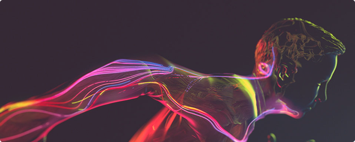
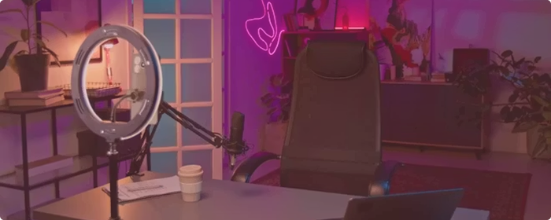

[ Креативный сектор: человек + технологии ]
Главный вектор
Креативный сектор продолжает расти, но его структура меняется так же стремительно, как и IT. Если раньше главным было владение конкретным инструментом — программой для монтажа, графики или анимации, — то теперь в центре внимания стоит идея и способность работать на стыке творчества и технологий. AI, 3D-графика, виртуальная и дополненная реальность, интерактивные форматы — всё это расширяет инструментарий специалиста. Однако технология остаётся лишь средством. Смысл, стиль и эмоциональное воздействие по-прежнему создаёт человек.

Технологии усиливают креатив
Искусственный интеллект уже стал частью повседневной работы креативных специалистов. Он помогает генерировать идеи и референсы, ускоряет рендеринг, автоматизирует простые анимационные процессы, упрощает обработку видео и графики. Но при этом ключевые решения — выбор стиля, динамики, композиции, атмосферы — остаются за человеком.
Растёт спрос на:
- моушн-дизайнеров
- 3D-художников
- digital-артистов
- креативных продюсеров
Важно понимать: знание программы — это лишь база. Реальную ценность создаёт уникальный визуальный почерк и способность мыслить концептуально.
Динамика становится новым стандартом:
Визуальная среда изменилась. Статичные изображения уступают место движению. Видео, анимация, микровзаимодействия в интерфейсах — всё это стало обязательной частью цифровой коммуникации. Бренды борются за внимание аудитории, и именно динамика позволяет удерживать его дольше нескольких секунд.
Особенно востребованы:
- специалисты по моушн-дизайну
- 3D-анимация и визуализация
- контент для digital-платформ
- интерактивный дизайн
Бренды конкурируют за внимание, и именно динамика становится инструментом удержания аудитории.

Креатив как часть стратегии:
Роль креативного специалиста значительно расширяется. Теперь это не только исполнитель визуальных задач, но и участник стратегических процессов.
Особенно востребованы:
- как понимать задачи бизнеса
- как ориентироваться в маркетинге
- как анализировать аудиторию
Креатив всё чаще интегрируется в маркетинг, IT, медиа и продуктовую разработку. Это означает, что специалисту важно разбираться в смежных областях и уметь работать в междисциплинарной команде.
Какие навыки станут критическими
До 2030 года ключевым преимуществом станет не просто креативность, а сочетание эстетики и технологий.
Особенно важны:
- Визуальное мышление — способность превращать идею в образ.
- Сторителлинг — умение рассказывать историю через движение и форму.
- Техническая гибкость — владение 2D, 3D и современными инструментами.
- Командная коммуникация — креатив почти всегда создаётся в команде.
Креативный сектор 2026–2030 — это пространство сотрудничества человека и технологий. AI поднимает планку, конкуренция между специалистами усиливается, но возможности расширяются.